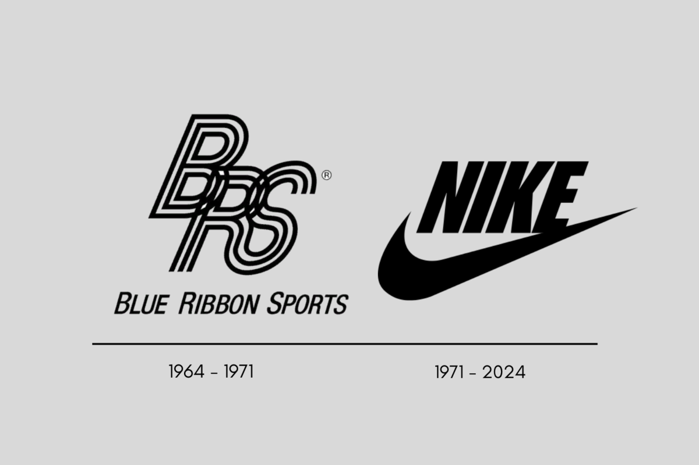
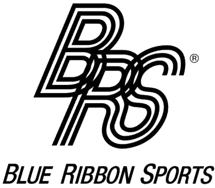
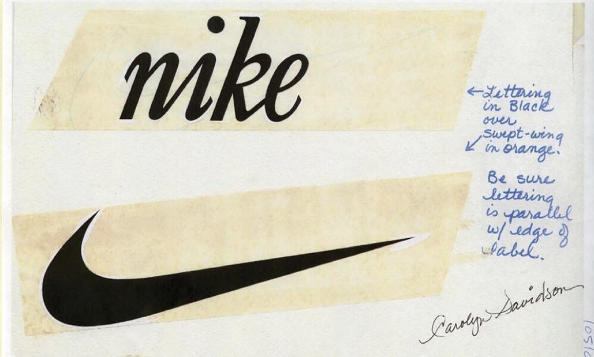
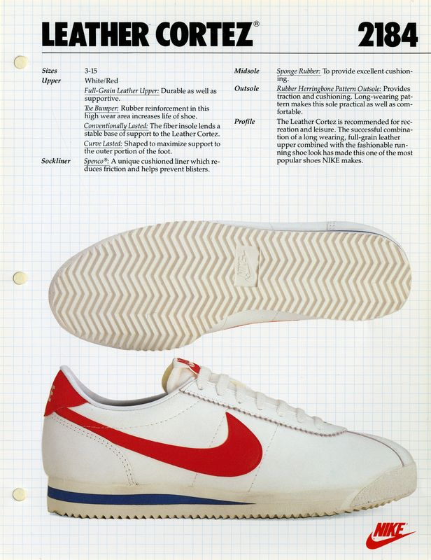

A legendás pipa, ismertebb néven "Swoosh" egy fiatal grafikus hallgató, Carolyn Davidson tervezte 35 amerikai dollárért, ami a mai átváltás szerint 12633Ft. Az első saját gyártású cipőjük az 1972-ben létrehozott "Nike Cortez" volt, ami egy könnyű és rugalmas futócipő volt, később popkultúrális ikonná vált.



Az 1980-as évek elején létrejött a Nike Air technológia, ami a légpárnás talpbetéttel rendelkező cipők voltak. Az első ilyen modell a Tailwind volt. Az igazi siker az 1982-es Nike Air Force 1, és az 1985-ös Nike Air Jordan 1 volt, amit Michael Jordan számára készítettek, de erről később lesz szó. Ezek a modellek kiadása után 10 évvel már a Nike uralta az utcai divatot. Az 1990-es években jöttek ki a következő Nike Air modellek: Air Max 1, 90, 95 és 97.